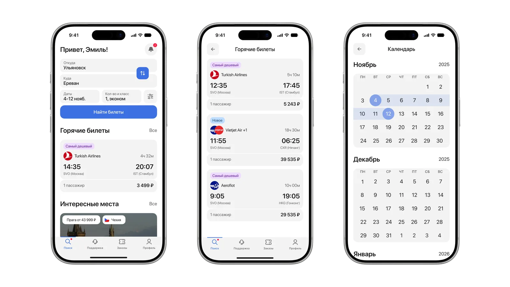
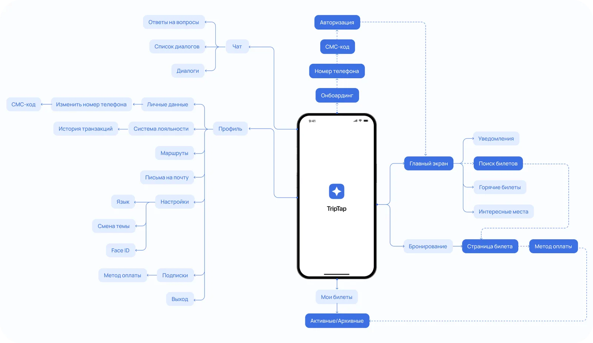

TripTap — учебный проект, на котором я тренировался проектировать не экран, а продукт: несколько связанных сценариев, десятки состояний, одна система компонентов.
Срок. Январь — май 2026, курс UPROCK.
Роль. Один за всё: исследование, архитектура, интерфейс, компоненты.
Платформа. iOS.

Задача
Шесть шагов, которые должны ощущаться как один
Покупка билета — цепочка: направление → даты → сравнение рейсов → пассажиры → бронирование → билет. Задача — связать шаги так, чтобы переход между ними не требовал усилий, и проработать состояния каждого экрана.
«…»
Из интервью с пользователем, который покупает билеты сам
Что видно у конкурентов:
Aviasales — затянутое бронирование между выбором рейса и оплатой.
КупиБилет — слабая иерархия в карточках: цену и время ищешь глазами.
Яндекс Путешествия — планка по качеству, на которую ориентировался.
Разбор конкурентовТри скриншота рядом — Aviasales, КупиБилет, Яндекс Путешествия — с пометками, где теряется пользователь.
Процесс · 01
Архитектура
Начал с карты приложения: какие разделы существуют и как связаны. Она зафиксировала два решения ещё до первого экрана.
Билеты — раздел верхнего уровня, с делением на активные и архивные, а не вкладка в профиле. В аэропорту билет нужен в один тап.
Бронирование линейное: страница билета, затем оплата, без ответвлений — чтобы не терять человека перед самым важным шагом.

Процесс · 02
Ключевое решение
Параметры поиска — откуда, куда, даты, пассажиры, класс — собраны на одном экране, а не разведены по шагам, как у части конкурентов.
Гипотеза: чем меньше переходов до первой выдачи, тем реже человек бросает поиск. Заложена в структуру экрана.
Экран поиска: все параметры на одном экранеСлева — TripTap, справа — тот же шаг у конкурента, разведённый по экранам.
Процесс · 03
Референсы и каркасы
Собрал референсы для ключевых компонентов — карточек рейсов, форм, модулей поиска, экранов входа. По ним сделал каркасы каждого сценария и только потом перешёл к визуальному слою.
Lo-Fi каркасы и ранние версии экранов2–4 кадра основного сценария: поиск → выдача → рейс. В идеале «было / стало» рядом.
Интерфейс
Сквозной сценарий и система компонентов
Основной путь — поиск → выдача → рейс → пассажиры → бронирование → билет. Вокруг него: горячие предложения, календарь цен, «Мои билеты», профиль.
Дизайн-система: около 75 компонентов, каждый в светлой и тёмной теме — 150 вариантов. Цвета и шрифты вынесены в токены: смена темы — переключение набора, а не перерисовка экранов.
Один экран — выдача рейсов — во всех состояниях. Тема экрана следует теме сайта.
Сделано. Архитектура, сквозной сценарий от поиска до билета, дизайн-система на токенах в двух темах, прототип с переходами.
Следующий шаг. Usability-тест сценария «поиск и покупка» на пяти-шести респондентах — и итерация по итогам.
Чему научился. Держать продукт целиком, а не экран за экраном: когда экранов десятки, сначала договариваешься с собой о структуре и компонентах, потом рисуешь.